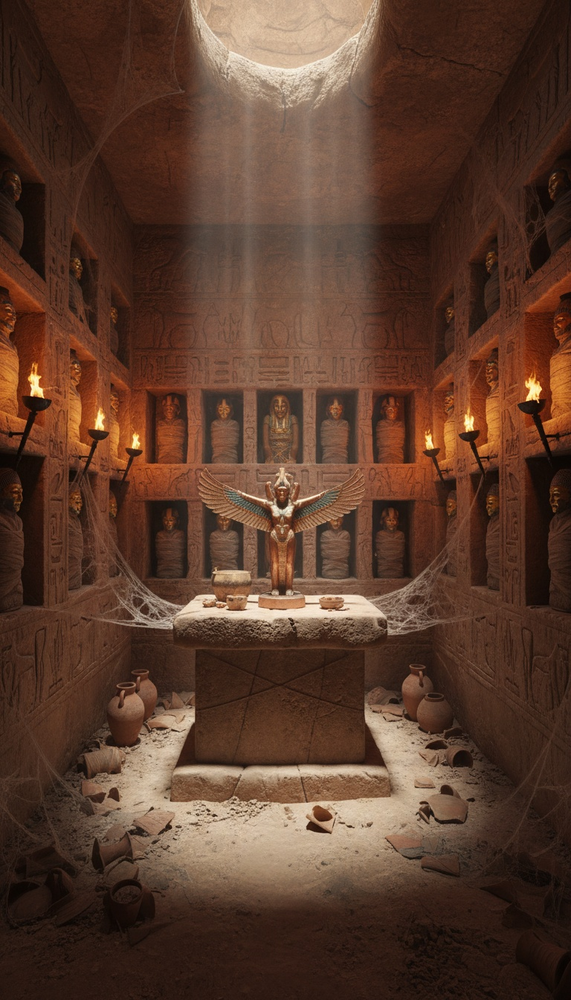

In April 1909, a newspaper printed the precise location of an Egyptian tomb buried inside the Grand Canyon. The Smithsonian Institution funded the explorer who found it, confirmed the excavation through a named representative, and then told the public that neither the explorer nor the representative had ever worked for the institution.
The article is still in the archive. Both men are still named in it. The site is still sealed. The Smithsonian has produced no explanation for how its own name ended up in a newspaper report for an expedition it says never happened.

The Arizona Gazette Ran It on Page One
April 5, 1909. The Arizona Gazette published a full-length feature under the headline “Explorations in Grand Canyon: Mysteries of Immense Rich Cavern Being Brought to Light.” The article named a Smithsonian-funded explorer, G.E. Kincaid. It named his institutional contact, S.A. Jordan. It gave the exact depth of the cave entrance: 1,486 feet below the canyon rim. It described the artifacts inside and the state of the ongoing excavation in detail that ran to multiple columns.
That edition of the Arizona Gazette exists. The date is recoverable. The article carries a dateline. The Smithsonian's name appears in it as the named sponsor of Kincaid's work, not as a background reference. This is a printed primary source from a newspaper that operated continuously in Arizona Territory and later in Arizona State for fifty-nine years, from 1880 to 1939.
A paper that invents a federal scientific expedition on its front page and attributes it to the Smithsonian Institution does not run for fifty-nine years in a competitive territorial market. The longevity of the Arizona Gazette is itself testimony about what kind of publication it was.
What Kincaid Found at 1,486 Feet
The cave ran 1,900 feet into solid rock. Kincaid described a main corridor with side chambers branching off at regular intervals. That arrangement is not a natural feature of Grand Canyon geology. It is the spatial logic of a planned structure.
The walls of the main hall carried hieroglyphic carvings. Hieroglyphs. The formal script system of ancient Egypt, the same system carved into the walls of the Valley of the Kings and the temples at Karnak. That system, cut into sandstone inside a cave in northern Arizona.
The central chamber held a copper idol installed at a shrine position. New Kingdom Egyptian temples place the cult statue at the structural center of the inner sanctum. The idol in Kincaid's cave was positioned at the center of the room, on a platform designed to hold it.
The mummies occupied niches cut into the chamber walls at regular intervals. Those niches did not form naturally. They were excavated by someone who planned to store bodies there permanently. The granary held supplies sufficient for extended occupation. Whoever built this site was not passing through. They built infrastructure for a sustained, permanent presence 1,486 feet below the canyon rim.
The Smithsonian's Own Man Confirmed It
The Arizona Gazette article did not rest on Kincaid's word alone. S.A. Jordan, identified in the article as a Smithsonian Institution representative, confirmed both the find and the ongoing excavation. His name is in the article. His institutional affiliation is in the article. He vouched for Kincaid's report in his own stated capacity as the institution's man on the ground.
Two named individuals. Two institutional affiliations on record. One published newspaper article with a date, a location, a funding body, and an artifact inventory. That is a chain of custody. The Smithsonian was not mentioned by implication or hearsay. It was named as the organization running the operation, by one of its own representatives.
The Smithsonian Institution sent two men into that canyon, confirmed what they found, and then told the public neither of them ever existed.
Both Men Vanish From the Record
At some point after April 5, 1909, the Smithsonian Institution reviewed its records and found no trace of G.E. Kincaid. The institution's current position is that Kincaid never worked for or with the Smithsonian in any capacity. His field report does not exist in their archive. His name appears on no employment record or official correspondence of theirs.
S.A. Jordan produced the same result. The institution claims no record of the man, no record of his field assignment, and no record of his written confirmation of the Grand Canyon excavation.
That position requires a specific set of facts to be true simultaneously. The Arizona Gazette invented two government-affiliated scientists by name. It fabricated detailed multi-chamber architectural descriptions for an Egyptian site with specific spatial features. It assigned a precise depth to the cave entrance. It described artifact types, including hieroglyphic inscriptions, copper idols, and mummy niches, that are consistent with Egyptian archaeological typology from contemporaneous excavations. It attributed the expedition to the Smithsonian Institution by name. And it published all of this as front-page news in April 1909 with no legal consequence, no libel action from the Smithsonian, and no damage to its own thirty-year subsequent run.
The Smithsonian Institution had legal remedies available in 1909 if a territorial newspaper had falsely placed its name on an invented expedition. It did not use them. The paper ran until 1939 without ever retracting the story.
The Land Gets Reclassified
After 1909, the section of the Grand Canyon corresponding to the site coordinates in the Arizona Gazette article was designated as restricted federal land. That section remains closed to the public today. The National Park Service marks portions of the inner canyon as off-limits to visitors, citing environmental preservation and safety.
You cannot go to the location Kincaid described and examine it. The access is denied. The stated reason for the closure involves nothing about Egyptian artifacts or suppressed excavations. The land was restricted and the public was excluded. Those two facts are not disputed by anyone.
The sequence is: a report surfaces naming a specific location inside the Grand Canyon, the two men attached to the report are erased from institutional records, and the land at the named location is permanently closed. Each step points the same direction. The Smithsonian has never addressed that sequence directly.
Egypt Does Not Belong in Arizona. That Is Why This Was Buried.
Egyptian artifacts inside the Grand Canyon do not fit the model American archaeology has spent a century building. That model excludes transoceanic contact between North Africa and the American Southwest during the period when Egyptian civilization was producing the artifacts Kincaid described. Kincaid's cave, if it contains what the Arizona Gazette reported, breaks that model at its foundation.
That is not a minor revision. Rewriting the pre-Columbian contact model affects every textbook currently used to teach American prehistory, every museum display presenting the current settlement narrative, and every institutional grant structured around the assumption that the current framework is stable. The Smithsonian Institution operates nineteen museums, twenty-one libraries, and nine research centers. It holds 154 million objects. Its authority as the custodian of the American historical record depends entirely on the stability of the model it enforces.
Institutions with that level of investment in a narrative have a documented history of managing contradictory evidence. The Smithsonian's own internal correspondence from the 19th century shows the deliberate disposal of anomalous skeletal remains that complicated the accepted population model. That pattern is documented in the institution's own records. It does not need to be invented here.
The April 5, 1909 Arizona Gazette article exists. It names Kincaid. It names Jordan. It names the Smithsonian. It gives the depth, the coordinates, and the artifact inventory. It was printed on a date, by editors with names, in a city with readers, in a publication that ran for fifty-nine years without ever retracting it.
The Smithsonian's position is that none of it happened.
One of those two things is a lie. The newspaper article cannot misremember its own text. The institution claiming the expedition never happened is the same institution the article names as its funding body. The cave is still sealed. The land is still closed. And the Smithsonian has spent over a century not answering one question: if S.A. Jordan was not real, whose name is in that article, and who put it there?
Before you go
7 books the Vatican doesn't want you reading. Free PDF — the texts they cut, with sources. Joined by 140+ Inner Circle members.
No spam. Unsubscribe anytime.
Go deeper
The Hidden Canon, Vol. I — Enoch. Jubilees. Thomas. Mary. Judas. 90 pages, 14 chapters, every receipt cited. The books your Bible quietly removed.
Read the Canon →Books that informed this investigation
As an Amazon Associate, Hidden Epoch earns from qualifying purchases. Cost to you: nothing.
Research safely
The VPN we use to research without being tracked. First 3 months free.
Get NordVPN →